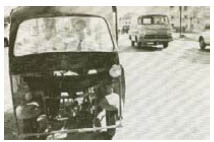

Ngay khi cưỡi ngựa tiến vào Champlitte, Jacob biết họ đã đến đúng nơi. Nhiều ngôi nhà mới sơn, những ngọn đèn khí gas thắp sáng đường phố vào ban đêm, một điều xa xỉ chỉ có ở những thành phố lớn trong thế giới sau gương này. Yêu râu xanh có mối giao hảo với láng giềng xung quanh. Chúng không bao giờ tìm mồi nơi chúng cư ngụ, và đóng góp tiền xây dựng đường sá, nhà thờ và trường học mới. Sự im lặng chúng mua được chính là lá chắn tốt nhất cho chúng. Jacob biết chắc có rất nhiều con mắt đang dõi theo họ từ sau những tấm rèm ở Champlitte.
Hầu hết những tên yêu râu xanh sống trong những căn nhà ở miền quê xa xôi và biệt lập, bao bọc xung quanh là đất đai rộng lớn. Xung quanh đây chỉ có một ngôi nhà phù hợp với mô tả như thế. Nó nằm ở phía Nam thị trấn, đến cuối thị trấn Jacob quay ngựa đi về hướng Bắc, để đề phòng một cư dân tốt bụng nào đó cảm thấy cần thiết phải báo tin cho Troisclerq về chuyến viếng thăm của họ.
Họ bỏ ngựa lại trong một khoảnh rừng. Ngay cả chó sói cũng sẽ không đụng đến ngựa quỷ, và Jacob đã thay yên cương bằng xích để chúng không thể chạy thoát. Con ngựa đực đã thật sự xem anh như bạn. Nó thân thiện đớp tay anh khi Jacob kéo ba lô ra khỏi yên ngựa.
Màn đêm thơm mùi hoa đang nở và những cánh đồng mới cày. Cảnh vật xung quanh họ dường như rất thanh bình. Một thiên đường ngủ quên, nhưng chẳng mấy chốc nữa họ sẽ bước trên con đường có hai hàng cây sung dâu chạy hai bên, trên lớp đá dăm lát đường ẩm ướt vẫn còn in dấu những bánh xe ngựa. Chỉ một lát sau một cánh cổng sắt hiện lên giữa những hàng cây.
Sự thanh bình giả tạo, cánh cổng đóng kín... Thậm chí cả con đường phía trước trông cũng giống như trong lần họ đi tìm em gái của Donnersmarck. Lần đó họ đã đến quá trễ. Không phải lần này, Jacob.
Anh sợ hãi phát nôn lên được. Anh không đếm nổi đã bao nhiêu lần trong chuyến cưỡi ngựa dài đằng đẵng anh bắt gặp chính mình đang đưa mắt nhìn xung quanh tìm Cáo. Hay nghĩ rằng nghe tiếng cô thở trong giấc ngủ cạnh bên mình.
“Báu vật lớn nhất mà chú mày từng tìm thấy là gì?” cách đây không lâu lão Chanute đã hỏi anh như thế. Jacob nhún vai và kể ra một vài món. “Chú mày còn ngốc hơn cả ta,” lão Chanute gầm gừ. “Ta hy vọng chú mày chưa để mất nó khi chú mày nhận ra câu trả lời.”
Những song sắt của cánh cổng phủ đầy hoa đúc bằng sắt. Không nói lời nào, Donnersmarck rút một chiếc chìa khóa trong túi ra. Jacob cũng có một chiếc y hệt, nhưng anh đã làm mất nó, cùng với nhiều thứ khác, trong pháo đài của bọn Goyl. Những chiếc chìa có thể mở được mọi ổ khóa. Một số cái chỉ dùng được ở vùng đất mà chúng được rèn nên, tuy nhiên cái này cũng dùng được ở đây. Cánh cổng bật mở ra ngay khi Donnersmarck nhét chìa khóa vào ổ.
Một nhà để xe ngựa, những chuồng ngựa lớn, lối vào rộng rãi giữa những cây cối sũng nước mưa, phía cuối lối vào là dinh thự mà họ đã trông thấy từ xa. Nó được bao bọc bởi những bức tường cây lá xanh tốt.
Mê cung của tên yêu râu xanh trước kia đã úa vàng và chết vì hắn đã trốn thoát, họ mở đường đi xuyên qua nó với thanh gươm trong tay. Nhưng mê cung này vẫn còn sống. Tốt, Jacob. Có nghĩa rằng hắn vẫn ở đây. Những bức tường cây lá rì rào ngay khi họ bước vào bên trong, như thể những cành nhánh xanh tốt của chúng muốn cảnh báo họ về tên giết người mà chúng đang canh gác. Troisclerq. Lần này tên yêu râu xanh có một cái tên và một khuôn mặt quen thuộc. Tất cả những đêm mà họ đã cùng nhau trải qua trong trạm xe ngựa, cùng nhau uống say và trao đổi những câu chuyện về tính ghen tuông của những nàng tiên và những cô con gái ông chủ nhà máy, về những cuộc đấu tay đôi mà họ từng thẳng hoặc từng thua, những xưởng rèn tốt và những thợ may tồi . Và hắn đã cứu mạng mi, Jacob.
Anh muốn giết chết hẳn. Anh chưa từng muốn thứ gì nhiều hơn thế.
Một bầy bồ câu vỗ cánh bay lên từ những bức tường lá. Jacob lo lắng nhìn theo chúng. Sẽ ra sao nếu hắn giết Cáo ngay khi nhận ra anh và Donnersmarck? Ngưng ngay, Jacob. Cô ấy vẫn còn sống.
Anh lặp đi lặp lại với chính mình. Cô ấy vẫn còn sống. Anh sẽ phát điên mất nếu tự cho phép mình nghĩ đến điều gì khác.
Anh chắc chắn chúng ta sẽ gặp lại nhau.
Anh sẽ giết hắn.